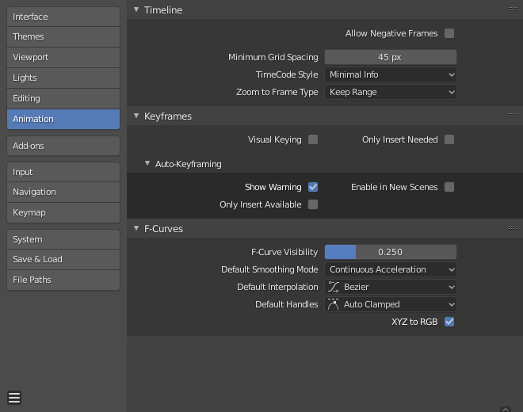

动画¶
动画 部分用于管理与 动画 相关的设置。这包括编辑器的外观以及一些不同的工具属性。

Blender偏好设置动画部分。¶
时间轴¶
这些设置控制 时间线 中的内容。
- 允许负数帧
Playback and animations can occur during negative frame ranges.
- 最小栅格间距
栅格线之间的最小像素数。
- Timecode Style
Format of timecodes displayed when not displaying timing in terms of frames. The format uses '+' as a separator for sub-second frame numbers, with left and right truncation of the timecode as necessary.
- Zoom to Frame Type
定义执行 查看帧 Numpad0 时将显示的时间范围(游标周围)。
- 保持范围
保留当前显示的时间范围。
- 秒
缩放秒数 字段中指定的将显示在游标周围的秒数。
- 关键帧
缩放关键帧 字段中定义的将显示在光标周围的动画关键帧的数量。
关键帧¶
这些设置控制 关键帧 ，它们是动画的构建块。
- 可视插帧
当物体使用约束时，物体属性值实际上不会更改。 可视化插帧 将添加关键帧到物体属性，其值基于约束的视觉变换。
- 只在必要时插入
仅当属性的值不同时，插入关键帧。
- 自动插入关键帧
- Show Warning
Displays a warning at the top right of the 3D Viewport, when moving objects, if Auto Keyframe is on.
- 只在可用曲线上插入
这只会将关键帧添加到已存在的函数曲线的通道中。
- Enable in New Scenes
默认情况下为新场景启用 自动关键帧 。
See also
学习更多关于 自动插帧 。